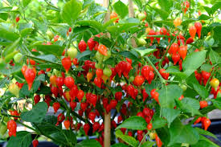

PIMENTINHA
- Desenvolvimento da Planta
- Artigos Científicos
Também chamada pimenta de bico, ela pertence à mesma espécie das pimentas habanero, de-cheiro, bode, cumari-do-Pará e murupi. Todas essas pimentas são muito aromáticas e saborosas, mas o ardor pode ser bem suave (leve), como na biquinho ou muito picante (intenso) como na habanero.
Eotecnologia.
Qual é o benefício da pimenta biquinho?
Ela possui vitaminas C, B6 e K1, e é rica em cálcio, ferro, magnésio, fósforo e sódio, além do betacaroteno. Com essas propriedades, a pimenta-de-cheiro é considerada um bom antioxidante, ajuda o sistema imunológico, ajuda a controlar o açúcar no sangue, a prevenir inflamações e a diminuir dores musculares.
.jpeg)
Por que que a pimenta biquinho não arde?
Seu nome, como era de se esperar, vem do formato triangular pontiagudo de seus frutos, ela é redondinha com um biquinho para a frente. A pimenta biquinho tem capsaicina, o componente responsável pela picância. Mas sua ardência é imperceptível ao paladar numa escala de grau de pungência super baixa.
.jpeg)
Faz bem comer pimenta todos os dias?
Felizmente, o consumo moderado de pimenta não é capaz de causar por si só o surgimento de gastrites e úlceras estomacais, por exemplo. Agora, uma ressalva bem importante: aqueles que JÁ possuem gastrite, úlceras, hemorroidas e diverticulites devem evitar o consumo de pimenta e/ou pratos apimentados.
Como cuidar de um pé de pimenta biquinho?
Irrigação. É importante manter uma frequência de regas para garantir a saúde e o desenvolvimento da planta. Regue a pimenta biquinho pelo menos a cada dois dias, de preferência no início da manhã ou no final da tarde. Mantenha o solo úmido, mas não encharcado.